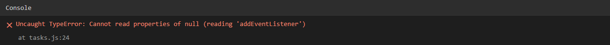
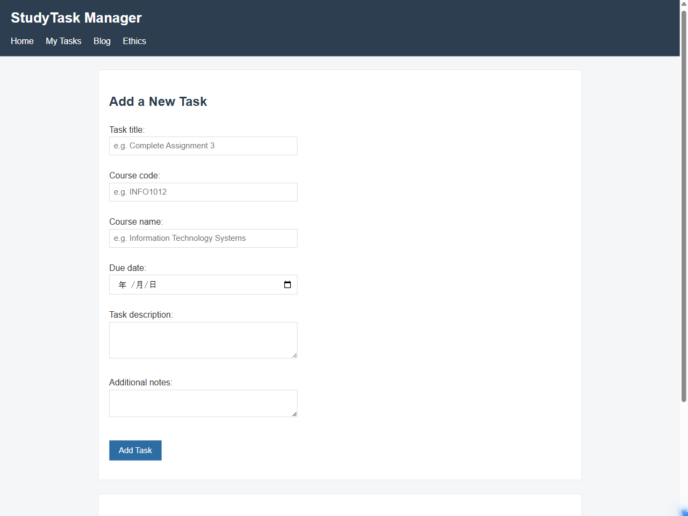
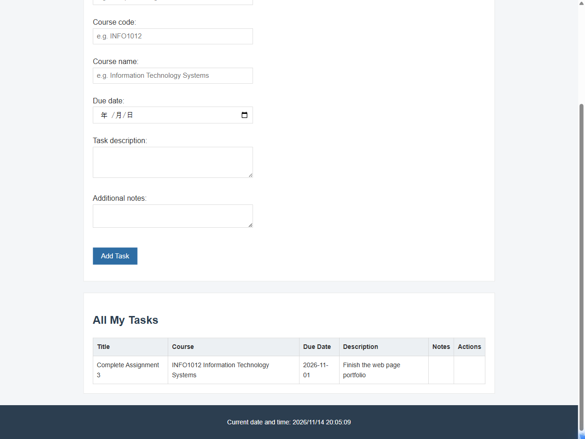
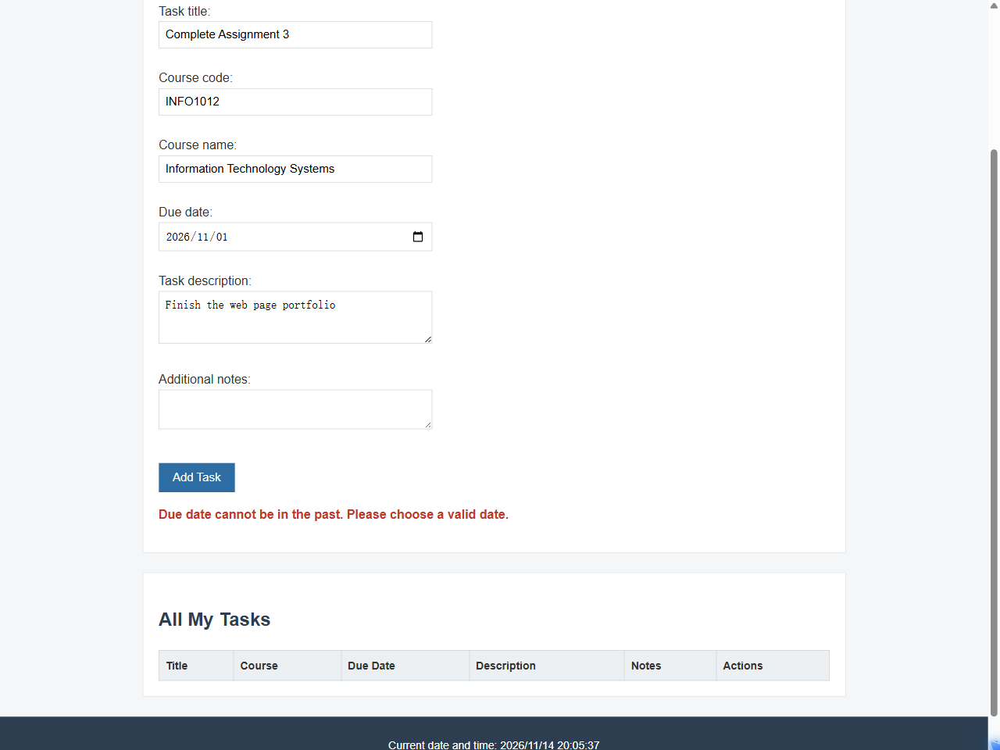

Project Plan: My Agile Approach
Agile is a way of building software step by step. Instead of planning everything at the start, the work is split into short periods called sprints. Each sprint produces something that actually runs, and the next sprint adds more features on top of it.
I used a few Agile ideas while building this app:
- I divided the work into three weekly sprints, each with a clear goal.
- I built the simplest working version first and added features after that.
- I tested as I went, so problems were fixed straight away instead of all at the end.
I chose this approach because I was working alone. Small steps kept the project organised, and when something broke it was easier to find which change caused it.
Three-Week Sprint Plan
| Week | Planning | Analysis | Design | Implementation | Testing & Maintenance |
|---|---|---|---|---|---|
| Week 1 | Picked the study task idea and listed the required pages | Looked at how existing to-do apps are organised | Sketched the home page layout on paper | Built the home page HTML | Checked that links and images open correctly |
| Week 2 | Listed the fields every task needs | Studied login and validation examples | Designed the task form and table | Built login, CRUD and data validation | Tested empty and invalid inputs |
| Week 3 | Planned the two written pages | Reviewed Agile and ethics notes | Designed the blog and ethics layout | Built the blog and ethics pages | Ran a full test, fixed bugs and updated the README |
Troubleshooting Blog
Error 1: Clicking Add Task Did Nothing
Encountered: 13 November 2026, 2:05 pm
When I clicked the Add Task button, nothing happened. The console showed the following error:

The code that caused the problem:
var saveButton = document.getElementById("save-button");
saveButton.addEventListener("click", function () {
// save the task
});Resolved: 13 November 2026, 2:18 pm

The corrected code:
var saveButton = document.getElementById("save-btn");
saveButton.addEventListener("click", function () {
// save the task
});Explanation: I had written "save-button" in getElementById, but the id in the HTML was "save-btn". Because no element matched, getElementById returned null, and calling addEventListener on null threw a TypeError. I fixed the id to match the HTML, and the button worked. I also learned to check the id spelling first when a button does not respond.
Error 2: A Past Due Date Was Accepted
Encountered: 13 November 2026, 2:25 pm
The validation was supposed to reject past dates, but a task dated 1 November was still added to the table:

The code that caused the problem:
var today = new Date();
if (dueDate < today) {
formError.textContent = "Due date cannot be in the past.";
}Resolved: 13 November 2026, 2:40 pm

The corrected code:
var today = new Date();
today.setHours(0, 0, 0, 0);
var selectedDate = new Date(dueDate + "T00:00:00");
if (selectedDate < today) {
formError.textContent = "Due date cannot be in the past.";
}Explanation: dueDate was a string from the date input, but today was a Date object. Comparing a string directly with a Date did not work as expected, so the check never ran. I converted dueDate into a Date object first, and set both dates to midnight so the time would not affect the comparison. After that, past dates were correctly rejected. The MDN web docs helped me understand how the Date object works.